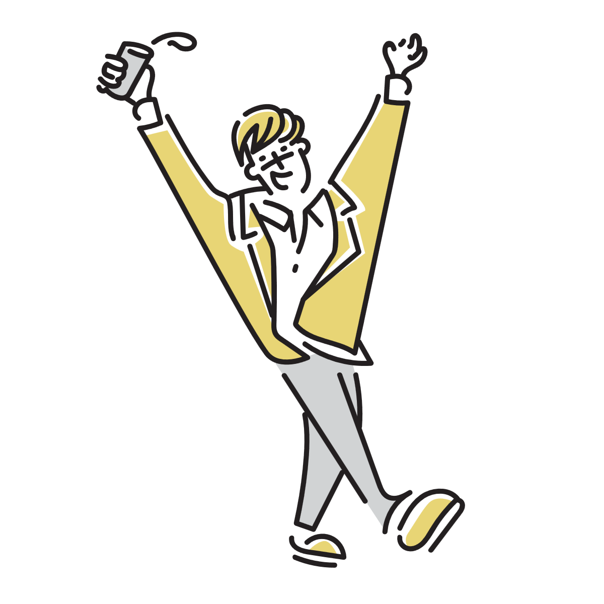
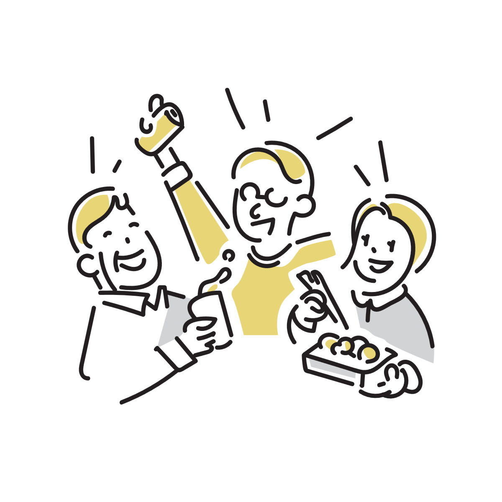
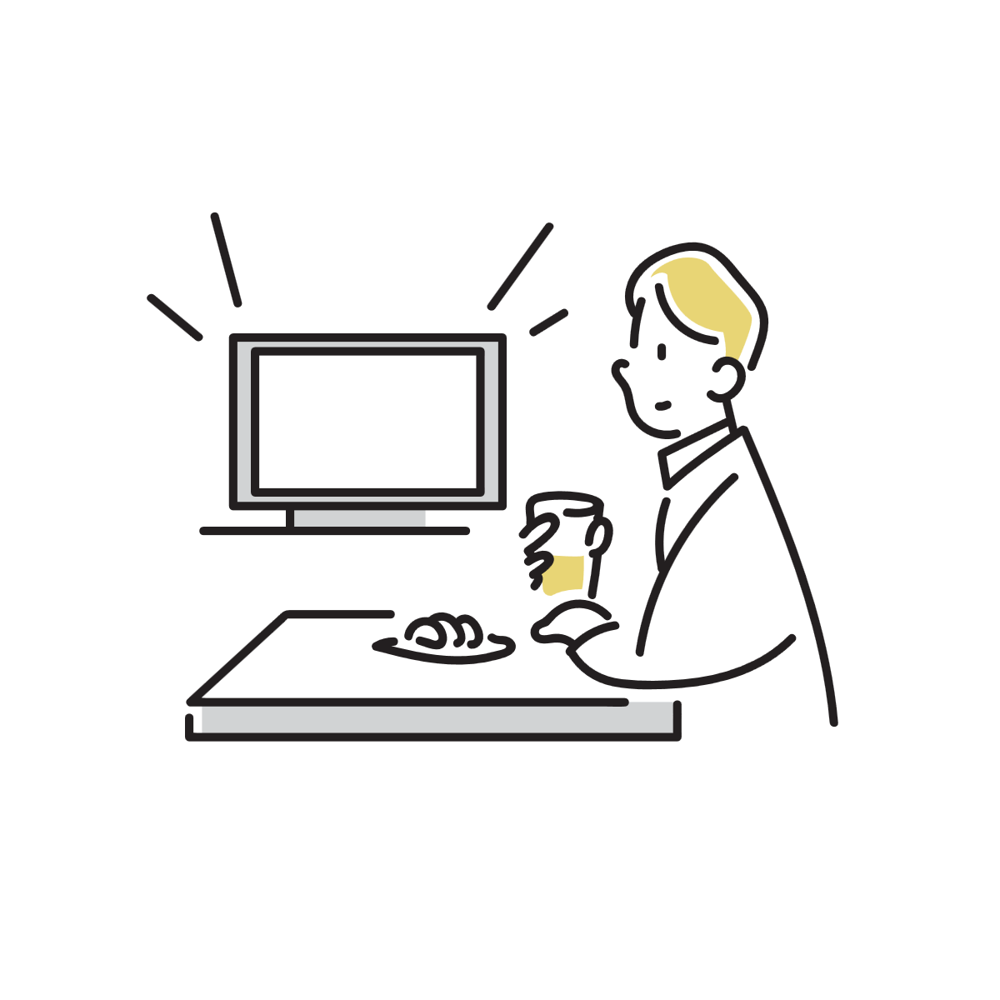

お酒で二日酔いになる人とならない人は何が違う？
楽しいお酒の席の翌朝、頭痛や吐き気に悩まされる人がいる一方で、どれほど飲んでも翌日はすっきりと目覚める人がいます。
「自分は二日酔いになりやすい体質なのだろうか」と不思議に思ったことがある人は少なくありません。
「若い頃は平気だったのに、最近になり急に翌日へ残るようになった」という変化に戸惑う声もよく耳にします。
実は、この違いは単なる「お酒の強い・弱い」だけで決まるわけではありません。体内でアルコールを処理する仕組みや、飲むときの環境、個人の体調などが複雑に絡み合っています。 ここでは、二日酔いになる人とならない人の違いに着目し、その背景にあるメカニズムや、お酒と上手に向き合うためのヒントを解説します。

二日酔いになるかどうかはお酒の量だけで決まるわけではない
同じように飲み会でグラスを重ねた仲間同士であっても、翌朝のコンディションには大きな差が生まれることがあります。
一方は、起き上がれないほどの倦怠感や頭の重さに苦しみ、水分を摂ることもままならない状態になります。
もう一方は、前夜の楽しさを心地よく残したまま、いつも通りに朝食を楽しみ、軽快に行動を始められます。
この違いは、単に「お酒の量が多すぎたかどうか」だけではなく、体内での代謝プロセスや、その日の水分・栄養バランスなどが微妙に異なることで引き起こされます。
肝臓のアルコール分解能力は個人差がある
二日酔いのなりやすさを大きく左右しているのは、肝臓におけるアルコールの分解能力と、そのスピードの差です。
体内に取り込まれたアルコールは、肝臓でまず「アセトアルデヒド」という物質に変化し、その後さらに無害な酢酸へと分解されます。 このアセトアルデヒドは毒性が強く、頭痛や吐き気などの二日酔いの症状を引き起こす主な原因となります。 分解酵素の働きが遺伝的に活発な人は、アセトアルデヒドが素早く無毒化されるため、体内に毒素が長くとどまりません。
一方で、分解に時間がかかるタイプや、処理能力を超えてアルコールを摂取してしまった場合は、有害物質が血中に滞留し続け、翌日まで不快な症状を持ち越すことになります。 また、年齢を重ねるにつれて肝臓の代謝機能が緩やかになるため、「昔はならなかったのに最近は残るようになった」という変化も自然な現象として起こり得ます。
- お酒を飲むとすぐに顔が赤くなりやすい、または動悸がする
- 若い頃に比べて、同じ量を飲んでも翌朝に残りやすくなったと感じる
- 自分の限界の量を超えて飲んでしまうことが多い
自分の分解能力を超えない量を意識し、無理のないペースで楽しむことが大切です。体調が優れないときは、いつもより控える勇気を持ちましょう。 また、若い頃の感覚で飲むと当時よりも酔いが残りやすくなっていることがあります。

水分量や空腹の程度の影響は少なくない
体質的な要素だけでなく、お酒を飲んでいる最中の状況や飲み方も、翌朝の明暗を分ける大きな要因になります。
お酒を飲むと、アルコールの利尿作用によって、体は想像以上に多くの水分を失っていきます。 喉が渇いたと感じる前にこまめな水分補給を行っている人は、脱水やそれに伴う血流の悪化を防ぐことができます。
しかし、お酒ばかりを続けて飲み、水分やチェイサーを口にする習慣がない場合は、体内の水分バランスが急速に崩れ、翌朝の激しい頭痛を招きやすくなります。 また、空腹のまま一気に飲み干すようなペース配分をしていると、血中アルコール濃度が急激に跳ね上がり、肝臓の処理が追いつかなくなります。
- お酒を飲む際に、お水（チェイサー）をほとんど飲まない
- 空腹のままアルコールを勢いよく飲んでしまうことが多い
- 気づかないうちに普段以上のペースでグラスを重ねている
お酒と同じかそれ以上の水分（お水）を意識して間に挟むことや、何か胃に入れてから飲み始めることで、血中濃度の急上昇や脱水を和らげることができます。
4. 自然な変化として受け止める心身のサイン
二日酔いになりやすいからといって、それが一概に「体が劣っている」ということではありません。
お酒に対する体の反応は、その日の疲労度や睡眠不足、ストレス状態などによっても日々変化します。
「今日はいつもより体に負担がかかるな」と感じる日は、アルコールの分解スピードも普段より落ちやすくなります。
自分の体質やその日のコンディションを正しく知り、無理のないペースや水分補給を意識することが、心地よい時間を長く楽しむためのコツといえます。

⚠受診を考えた方がよいケース
お酒を飲んだ翌日に体調がすぐれないこと自体は珍しくありませんが、すべての不調を単なる二日酔いとして片付けることはできません。
適量のお酒しか飲んでいないにもかかわらず激しい頭痛や嘔吐が続く場合や、以前と比べて明らかに症状が重くなっている場合は、別の体調不良が隠れている可能性もあります。
また、強いめまいや胸の痛み、しびれなどを伴う場合は、無理をせず医療機関への相談を検討してください。
参考情報と注意点
アルコールが体に与える影響には大きな個人差があります。不安がある場合は、無理をせず専門医に相談してください。
関連アイテム